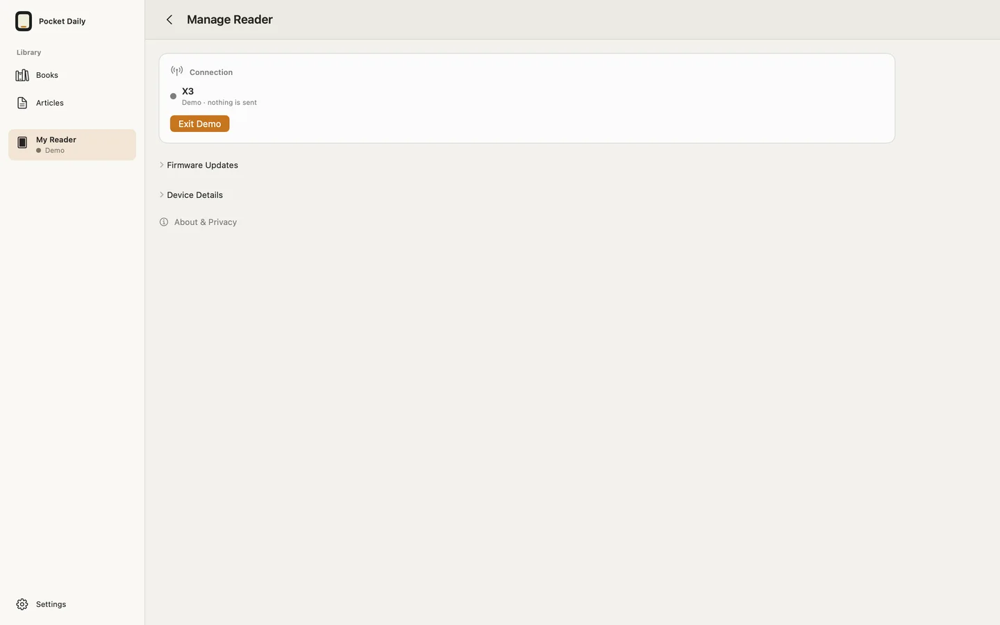

THE POCKET DAILY GUIDE
사용 가이드
앱에서 첫 책을 읽는 순간부터 리더기 연결, 읽던 위치와 화면 설정까지.
01
첫 책 열기
- 앱을 열고 Library → Books에서 Welcome to Pocket Daily를 선택합니다. 리더기나 계정은 필요하지 않습니다.
- +를 눌러 파일 앱의 DRM 없는 EPUB·TXT·Markdown을 추가합니다. Mac에서는 책 파일을 Library에 드래그할 수도 있습니다.
- TXT·Markdown은 가져올 때 EPUB으로 변환됩니다. 기존 EPUB의 내용은 그대로 유지됩니다.
스토어에서 구입한 DRM 보호 도서는 열 수 없습니다. iCloud Drive 등 온라인 위치의 파일은 오프라인으로 전환하기 전에 내려받으세요.

02
페이지와 글자 설정
- 다음 페이지: 페이지 오른쪽을 누르거나 왼쪽으로 넘깁니다.
- 이전 페이지: 페이지 왼쪽을 누릅니다.
- 읽기 도구: 가운데를 눌러 목차와 도구를 표시합니다.
- Aa / Text & Page: 글꼴·크기·간격·여백과 Paper·White·Night 페이지를 선택합니다.
- 키보드: 화살표, Space, Page Down으로 넘길 수 있습니다.
앱의 페이지 색과 리더기의 글꼴·버튼 설정은 별개입니다. 리더기 설정은 아래 Reading Preferences에서 바꿉니다.
03
X3/X4 연결하기
먼저 기기의 펌웨어를 확인하세요
전체 연동에는 Pocket Daily 펌웨어가 설치된 호환 X3/X4가 필요합니다. 기기 이름만으로 호환 여부를 판단하지 마세요. 앱만으로도 책을 읽을 수 있습니다.
같은 Wi-Fi로 연결
- 리더기에서 Pocket Daily → Sync → Same Wi-Fi를 열고 네트워크에 연결합니다.
- 앱에서 My Reader → Find on Same Wi-Fi를 선택합니다.
- 표시된 리더기를 확인하고 연결합니다. 이 경로는 Apple 기기의 Wi-Fi를 바꾸지 않습니다.
처음 설정하거나 라우터가 없을 때
Set Up Reader는 지원되는 리더기와 시스템 Bluetooth 페어링 후 Wi-Fi 정보를 전달합니다. X3의 새 설정에서는 처음 부팅할 때 설정 화면이 나타날 수 있습니다. 건너뛰었다면 리더기의 Sync → Direct connection에서 시작하세요. X4는 X3와 같은 자동 첫 부팅 화면을 전제로 하지 않습니다.
Connect Directly는 리더기의 임시 Wi-Fi에 연결하는 별도 선택입니다. 앱 안내와 시스템 승인을 확인하세요. 인터넷 연결이 잠시 끊길 수 있으므로 필요한 책은 먼저 내려받으세요.
Bluetooth·로컬 네트워크 권한은 해당 기능을 쓸 때 허용합니다. Mac의 Wi-Fi 검색에는 위치 권한이 필요할 수 있으며, 앱은 좌표를 수집하지 않습니다. Wi-Fi 이름을 채우는 권한을 거부해도 직접 입력할 수 있습니다.

04
책 전송과 SD 카드
- Library에서 책 또는 본문을 저장한 아티클의 Send to Reader…를 선택합니다.
- 작업 화면에서 대상 리더기를 확인하고, 필요하면 연결한 뒤 Send를 누릅니다.
- 전송이 완료됐다는 결과를 확인하고 리더기의 Library에서 책을 엽니다. 앱에 보이는 기기 목록은 마지막으로 확인한 상태입니다.
작업 화면을 닫아도 다시 열어 결과를 확인할 수 있습니다. 저장 여부가 불확실하다면 원래 전송 대상 리더기에 다시 연결해 확인한 뒤 재시도하세요. 다른 준비된 책이나 펌웨어가 함께 전송되지 않습니다.
Mac에서 SD 카드로
같은 전송 작업에서 SD card를 선택하고, Mac에 장착한 SD 카드의 대상 폴더를 지정합니다. SD 복사와 무선 전송 결과는 따로 표시됩니다. 호환 X3/X4의 USB 연결이 곧 SD 카드 드라이브를 뜻하지는 않습니다. 필요하면 별도 카드 리더기를 사용하세요.
05
읽던 위치 이어가기
기기마다 동일한 책 파일이 있어야 합니다. Library의 공유 기능으로 같은 파일을 옮기세요.
- Apple 기기 사이: 같은 Apple 계정으로 iCloud에 로그인하고 Settings → Continue Reading에서 공유를 켭니다. 책 파일 자체를 자동 배포하는 기능은 아닙니다.
- 리더기와: 지원 펌웨어의 연결된 리더기와 위치를 교환합니다. Bluetooth 공유는 페어링과 해당 기능 지원이 필요하며, 백그라운드 전달은 운영체제의 영향을 받습니다.
- 다른 위치가 보이면: 제안을 확인하고 이동 여부를 선택합니다. 앱이 확인 없이 페이지를 바꾸지 않습니다.
책을 여는 것만으로 읽은 시간을 갱신하지 않습니다. 위치가 보이지 않으면 동일한 파일인지, 공유가 켜져 있는지, 리더기가 연결돼 있는지부터 확인하세요.
06
Home·Sleep과 읽기 설정
- My Reader → Reader Settings에서 Home Screen 또는 Sleep Screen을 선택합니다.
- 레이아웃을 고르거나 순서를 바꾸고 미리보기를 확인합니다. 샘플 표시가 있는 미리보기는 실제 기기의 현재 상태와 구분하세요.
- 해당 화면의 Apply to Reader를 눌러 적용 결과를 확인합니다.
My cards는 새 초안에 편집 가능한 카드 3개를 제공합니다. Card Collections에는 12개 묶음, 총 36개의 원본 카드가 있습니다. 기존 초안이나 사용자가 비워둔 상태를 자동으로 덮어쓰지 않습니다. 컬렉션 교체 전 미리보기를 확인하세요.
카드와 날씨·캘린더는 별도의 편집기와 적용 버튼을 사용합니다. 닫기만 하면 변경은 로컬에 남습니다. 날씨는 선택한 도시, 일정은 사용자가 허용한 캘린더를 사용하며 필수 기능이 아닙니다.
Reading Preferences에서는 리더기의 글꼴·여백·방향·페이지 버튼 동작을 바꿉니다. 저장 후 기기에서 반영된 상태를 확인하세요. 데모 모드에서는 기기를 변경하거나 전송하지 않습니다.
전자종이는 절전 중에도 마지막 화면을 유지할 수 있습니다. 화면이 남아 있다는 사실만으로 Wi-Fi 연결 또는 전원 상태를 판단하지 마세요.

07
아티클과 구독
iPhone·iPad의 공유 메뉴에서 링크나 텍스트를 Pocket Daily로 공유하거나 Library → Articles → +로 추가합니다. 추출한 글을 확인한 뒤 저장하세요. 링크만 저장됐다면 Get full text로 다시 시도하거나 본문을 붙여넣습니다.
Subscriptions에 직접 HTTPS RSS·Atom 피드 주소를 추가할 수 있습니다. 구독 시 최근 최대 20개 글을 수집하며 앱을 열거나 Refresh를 선택할 때 갱신합니다. 이메일 계정 연결이나 서버의 예약 배달 기능은 없습니다.
저장된 본문은 오프라인 읽기가 가능하며, 읽음·나중에 읽기·편집·리더기로 보내기는 별도 선택입니다. 구독을 해제해도 수집한 글은 남습니다. 아티클 목록과 구독은 기기 로컬에 저장되며 Apple 기기 사이에서 자동 동기화되지 않습니다.

08
펌웨어와 호환성
공식 펌웨어 배포 전에는 앱에 호환 업데이트가 없다고 표시될 수 있습니다. 이 가이드와 소개 영상의 공개가 앱이나 펌웨어 바이너리의 배포를 의미하지 않습니다.
Pocket Daily 업데이트
- 호환 공식 릴리스가 있을 때 리더기의 Sync → Same Wi-Fi에서 앱에 연결합니다.
- 앱의 My Reader → Reader Options (•••) → Manage Reader → Firmware에서 제공되는 업데이트를 선택합니다.
- 파일 전송 완료는 설치 완료가 아닙니다. 리더기의 업데이트 확인에서 직접 Confirm한 뒤 재부팅을 기다립니다.
- 같은 리더기에 다시 연결해 표시되는 버전을 확인합니다.
Download Update for Later는 공식 파일을 준비만 합니다. 나중에 보내기와 리더기 설치 확인이 필요합니다. Store 앱은 임의의 로컬 펌웨어 파일을 가져오지 않습니다. X3는 기기 자체의 인터넷 업데이트 대신 공식 릴리스가 있을 때 앱 또는 SD 경로를 사용하세요.
일반 CrossPoint에서 이주
정확한 모델과 설치 가능 여부를 먼저 확인하세요. 호환 공식 파일이 있을 때 File Transfer → Join a Network로 연결하고 앱의 Find on Same Wi-Fi → Manage Reader → Firmware → Install Pocket Daily… 안내를 따릅니다. 검증된 복사 뒤 기기의 Settings → System → SD Card Firmware Update → pocket-daily.bin → Confirm에서 설치합니다.
CrossPoint 1.6.5의 큰 Wi-Fi 복사는 실패할 수 있습니다. 실패한 복사는 설치가 아닙니다. 해당 모델에서 지원되는 SD 카드 설치·복구 경로를 확인하기 전에는 계속 시도하지 마세요.
순정·잠긴 기기·다른 모델
순정 펌웨어 직접 연결이나 고객용 USB 자동 설치는 제공하지 않습니다. X4 Classic/V2·X4 Pro는 다른 모델입니다. 잠금 상태가 불명확하면 판매자에게 확인하세요. Pocket Daily 설치에 CrossPoint unlocker를 사용하지 마세요. 복구 방법과 백업을 먼저 준비하고, 불확실하면 앱만 사용하세요.
09
무료 사용과 선택적 후원
읽기·기사·전송·이어읽기·리더기 편집의 모든 기능은 무료입니다. 기존 무료 기능은 계속 무료로 유지합니다.
마음에 들면 Settings → Support Development에서 개발을 응원할 수 있습니다. 각 결제는 별도의 일회성 인앱 구매이며 구독이나 기능 잠금 해제가 아닙니다. 가격은 App Store의 현지 통화로 표시되고, 후원하지 않아도 모든 기능을 사용할 수 있습니다. 앱과 후원 상품은 출시 준비 중입니다.
10
내 데이터와 권한
Pocket Daily에는 개발자 계정 시스템·분석·광고·중계 서버가 없습니다. 책은 로컬에 보관되고 전송은 사용자가 선택한 기기나 SD 카드로 이루어집니다.
읽기 위치 공유에는 사용자의 iCloud 또는 로컬 연결을 사용합니다. 피드·기사·날씨·공식 업데이트를 요청할 때는 해당 제공자에게 네트워크 요청이 전송됩니다. 권한별 동작과 진단 기록의 범위는 개인정보 처리방침 (English)에서 확인하세요.
문제를 신고할 때는 비밀번호·페어링 코드·개인 도서·일정·네트워크 정보가 포함되지 않도록 진단 파일을 검토하세요.